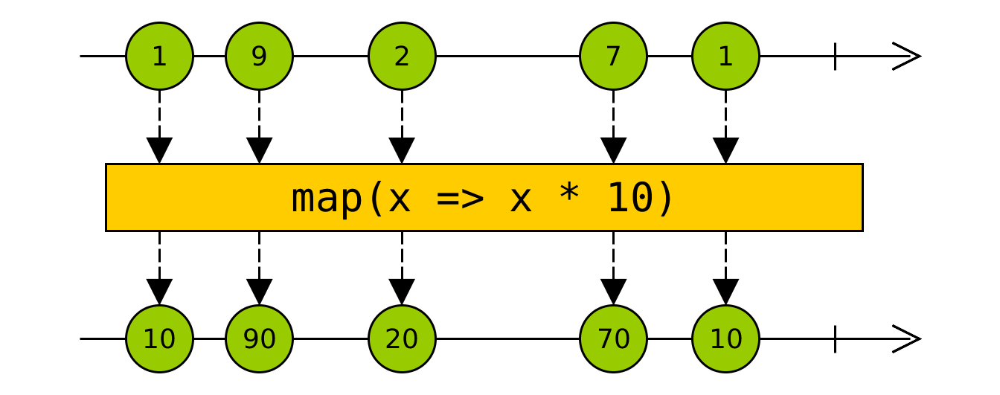

- Intro.
- Approaches to deal with asynchronicity.
- Reactive Programming.
- Plumbing!
- Observables.
- Operators.
- Code examples.
- Final notes.
- A way to manage asynchronicity.
- Based on the ReactiveX library.
- Observer pattern, Iterator pattern and functional programming.
- Available in many languages: JavaScript, PHP, Java, Scala, Go, Kotlin, Swift, C#, C++, Pyhton and others.
- The browser environment is asynchronous.
- Unpredictable events over time.
- AJAX.
- User interaction (mouse, keyboard, etc).
- Timers or animations
- WebSockets.
- Workers.
var doc;
memStorage.get(docId, response => {
doc = memResponse;
if (!memResponse) {
localStorage.get(docId, localResponse => {
doc = localResponse;
if (!localResponse) {
serverStorage.get(docId, serverResponse => {
doc = serverResponse;
if (!serverResponse) {
// Error.
}
});
}
});
});
- Objects that wrap asynchronous operations and react when there is a result.
- They're chainable.
- They greatly improve flow and error management.
- Added to ES2015 (ECMAScript 6).
- They are resolved only once: they return a single value.
- Following the execution flow may not be trivial.
- They are not lazy.
- They are not cancellable.
- Promise hell.
- Programming with asynchronous data streams.
- Use of data pipes that process and alter data.
- Declaration of reactions to changes.
- Similar example: how Angular, React and Vue.js update user interface on data change.
- It greatly simplifies asynchronous working.
- Very easy to combine and manage asynchronous data sources.
- Generates a shorter, simpler and more intuitive code*.
- Maintainability.
- Is about creating data pipes.
- Asynchronous data sources are piped.
- The pipes transform the data.
- The pipes are modulated.
- When data reaches the end of the pipe a reaction is triggered.
Example: Click event listener (using callback approach).
jQuery('#grip').click(function() {
jQuery('#panel').slideUp();
});


Example: From a click to an AJAX request, and then to a instantiated object list.

- Observables from Observer pattern.
- Data streams.
- They emit data until they finish or an error is triggered.
- They allow to chain streams.
- They allow to transform the stream data.
- They allow to modulate streams.
- They can create streams.
- They can combine streams
- They output an observable
Filter operator, filters values that don't match the condition.
Map operator, transforms stream data.

fromEvent(button, 'click')
.pipe(
map(() => 'https://example.com/api/classification'),
flatMap(url => http.get(url)),
map(items => items.map(new MyItem(item)))
)
.subscribe(instances => this.list = instances);
Auto refresh
var clickStream$ = fromEvent(button, 'click');
of(true).pipe(
merge(clickStream$),
switchMap(() => interval(60000)),
merge(clickStream)
map(() => 'https://example.com/api/classification'),
flatMap(url => http.get(url)),
map(items => items.map(new MyItem(item)))
)
.subscribe(instances => this.list = instances);
Optional auto refresh
var clickStream$ = fromEvent(button, 'click');
var refresh$ = of(true).pipe(
merge(clickStream$),
switchMap(() => interval(60000)),
filter(() => autorefresh),
merge(clickStream)
map(() => 'https://example.com/api/classification'),
flatMap(url => http.get(url)),
map(items => items.map(new MyItem(item)))
)
.subscribe(instances => this.list = instances);
Optional auto refresh and prevent nervous users
var clickStream$ = fromEvent(button, 'click').pipe(
throttleTime(15000)
);
var refresh$ = of(true).pipe(
merge(clickStream$),
switchMap(() => interval(60000)),
filter(() => autorefresh),
merge(clickStream)
map(() => 'https://example.com/api/classification'),
flatMap(url => http.get(url)),
map(items => items.map(new MyItem(item)))
)
.subscribe(instances => this.list = instances);
Optional auto refresh, prevent nervous users and error management.
var clickStream$ = fromEvent(button, 'click').pipe(
throttleTime(15000)
);
var refresh$ = of(true).pipe(
merge(clickStream$),
switchMap(() => interval(60000)),
filter(() => autorefresh),
merge(clickStream)
map(() => 'https://example.com/api/classification'),
flatMap(url => http.get(url)),
map(items => items.map(new MyItem(item)))
)
.catch(err => of(this.list))
.subscribe(instances => this.list = instances);
- You can express from simple reactions to extremely complex reactions to change.
- No more hells.
- Observables resolve as many times as needed.
- Execution flow is intuitive *.
- It's lazy.
- It's cancellable.
- With many ashynchonous data sources.
- Complex interactions.
- Complex interdependency.
- To avoid internal state to manage asynchronous events.
- Can be asyncronous or synchronous.
- Can be cold o hot.
- Can be multicast o unicast.
- Can share or not the data source with their subscribers.
Because others have already done it.
- It can express very complex models.
- It handles any data source.
- Observables: proposed for standard, currently in stage 1.
- Less code, improved maintanibility.
- Available in many languages.
- Asynchronicity.

- The introduction to Reactive Programming you've been missing: https://gist.github.com/staltz/868e7e9bc2a7b8c1f754
- Interactive marble diagrams: http://rxmarbles.com/
- Rx Visualizer: https://rxviz.com/
- ReactiveX: http://reactivex.io/
Join us for
contribution opportunities
Friday, December 11, 2020
First Time
Contributor Workshop